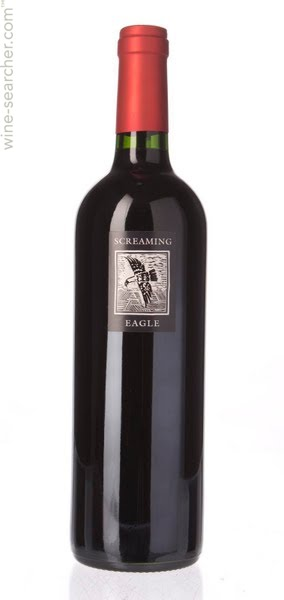
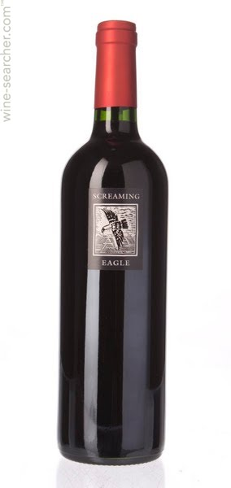
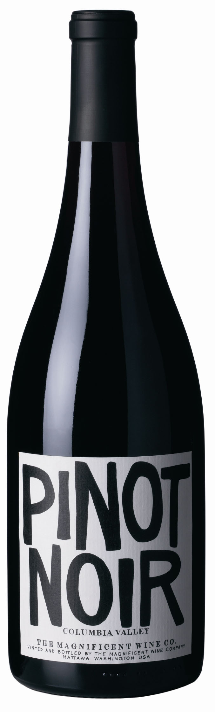
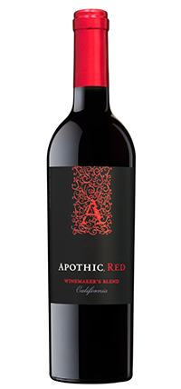

Cabernet Sauvignon $17.99

One of the world's most popular wine flavors, this cabernet sauvignon comes from St. James , Missouri. It features strong tastes that pair well with steak.

One of the world's most popular wine flavors, this cabernet sauvignon comes from St. James , Missouri. It features strong tastes that pair well with steak.

With tastes of blackcherry, plums and other herbal flavors, our merlot is the perfect wine for any food dish. The grapes are imported from northern Florida and create the perfect wine for anyone new to red wine.

If you are having a dinner of grilled salmon, chicken or sushi, this is the perfect wine for you! The taste of this wine is delicate and fresh with a fruity after taste making it the unique in flavor.

If you are looking for a wine that pears well with pizza and pasta, then look no further than our Zinfandel. With a zesty flavor of berry and pepper, you will fall in love with this locally grown wine.